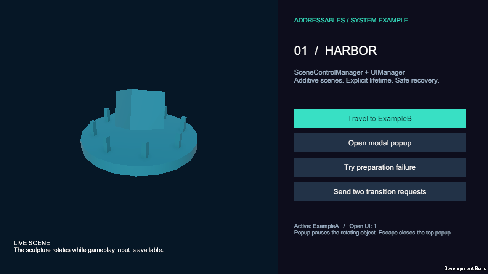
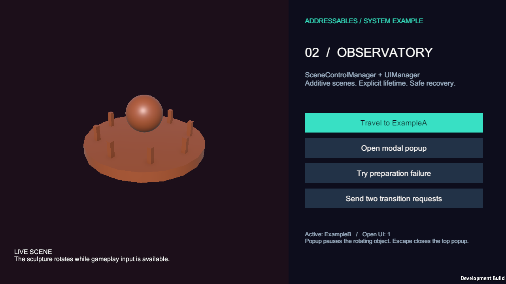
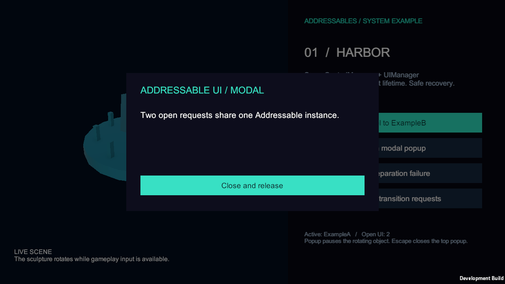
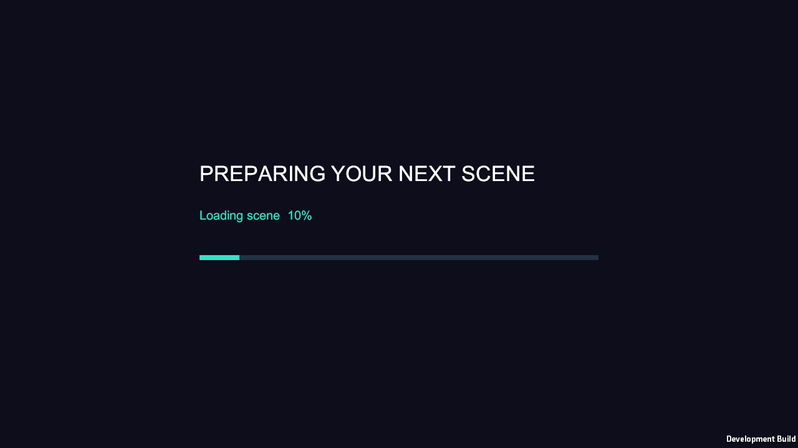
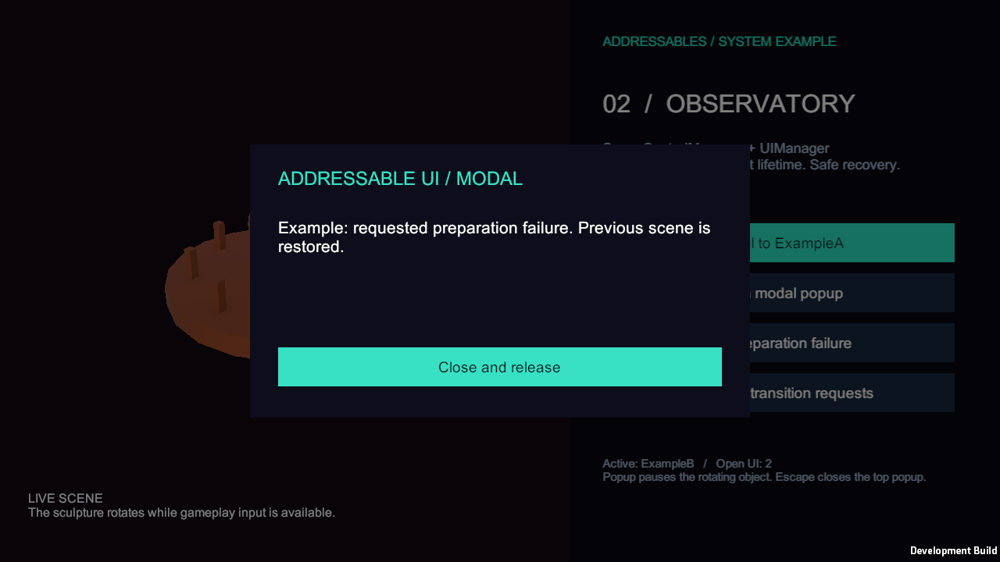

Tracefolio REPORTS & ISSUES
Tracefolio REPORTS & ISSUESBootstrap 씬 제거와 공통 초기화 프리팹·A/B 직접 Play 검증
완료두 예제 씬에서 바로 Play하며 하나의 Addressable 초기화 루트와 매니저를 전환 내내 재사용합니다.
작업 결과
구현·적용·빌드·실행 검증을 완료했습니다. Assets/Scenes/ExampleA.unity 또는 ExampleB.unity를 열고 바로 Play하시면 됩니다. 별도 시작 씬은 필요하지 않습니다.
변경 내용
적용 내용
SceneUIInitializer.prefab을 기존 UI Addressables 그룹에 등록했습니다. 두 씬의 SceneUIEntry는 진행 중 초기화 요청을 공유하고 기존 루트를 재사용합니다. 처음 직접 연 씬은 재로드 없이 등록하고 첫 전환에서 네이티브 경로로 해제하며, 이후 씬은 Addressables 핸들로 관리합니다. Bootstrap 씬·기존 스크립트·빌드 목록 항목을 제거했습니다. 기존 두 씬의 오브젝트 66개씩은 보존하고 진입점만 추가했습니다.
에셋 생성 중 씬을 열면서 카탈로그 객체 참조가 무효화된 오류를 실제 로그로 확인하여 저장 후 재조회하도록 수정했습니다. 에디터의 Escape 검사 실패 뒤 설치된 Input System 소스에서 Game View 포커스 제한을 확인했습니다. 명시적인 QA 실행에만 입력 전달 설정과 독립 검사 키보드를 적용하여 두 Play를 재검증했습니다. 실패 기록은 삭제하지 않았습니다.
검증
Unity 6000.0.83f1 / Addressables 2.9.1. Editor에서 ExampleA와 ExampleB를 각각 직접 Play하여 63개·63개 검사 통과, Play 종료까지 Editor 오류 0개입니다. Windows 실제 플레이어 68개 검사 통과·오류 0개입니다. 각 시작 경로의 6회 반복 전환과 sceneLoaded 시점에 비활성 객체까지 포함하여 루트·SceneControlManager·UIManager 각각 1개, 누적 생성 1회 및 동일 객체 재사용을 확인했습니다. EventSystem·AudioListener 단일성과 첫 씬 미재로드도 확인했습니다.
원본과 검증 복사본의 소스·메타·핵심 에셋 42개 해시가 일치했습니다. 기존 월드 보존과 공통 프리팹 GUID 참조, Bootstrap 제거를 대조했습니다.
Editor A · Editor B · Editor 종료 결과 · 플레이어 검사 · 소스 대조 · 씬 보존 · 수정 전 QA 실패 기록
실제 플레이어의 1280×720 화면 5장입니다. 캡처 원본을 편집 없이 사용했으며 각각 35~105KB입니다. A/B 화면과 로딩·팝업·실패 후 이전 씬 복구를 확인했습니다.
    
남은 사항
게임 저장소는 자동 커밋·푸시하지 않았습니다. 실제 QA는 원본 에디터를 방해하지 않도록 소스·에셋이 일치하는 격리 복사본에서 수행했습니다. Domain Reload를 끈 특수 Play 설정은 이번 실행 범위에 포함하지 않았습니다. 교훈 검토: 기존 폴더·진입 흐름 우선 규칙에 이미 포함되어 전역 지침 추가·변경은 없습니다. Unity 카탈로그 재조회는 프로젝트별 근거로 기록했습니다.
작업 시간
- 제안 시간: 15~25분
- 실제로 완료된 시간: 2026-11-01 17:17:57 KST 시작. 구현·실행 QA 기록 2026-11-01 17:45:51 KST. 경과 1675초. 최초 예상 초과: 새 복사본 패키지/에셋 임포트·셰이더 빌드와 실패한 검증 수정 후 재실행. 공개 배포 확인 시간은 후속 메뉴얼에 기록합니다.
- XERJ: 미사용 — XERJ 도구 미제공으로 rg 사용. 현재 소스·참조·실행 결과로 대조했습니다.